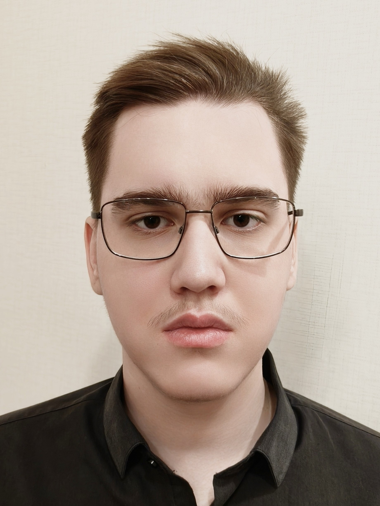

Место учебы
Фундаментальная и компьютерная лингвистика, НИУ ВШЭ, Москва
(нем. Andreas V. Kolessow)
«Сердце разумного приобретает знание,
и ухо мудрых ищет знания»
(Притчи 18:15)

Фундаментальная и компьютерная лингвистика, НИУ ВШЭ, Москва
! Казань !
Инженерный лицей
КНИТУ-КАИ, г. Казань
Окончил Инженерный лицей, увлекался физикой и информатикой
Поступил на программиста на ВМК КФУ
НО! Всегда любил лингвистику, хотя и не занимался олимпиадами
Вовремя одумался и перепоступил на ФиКЛ)